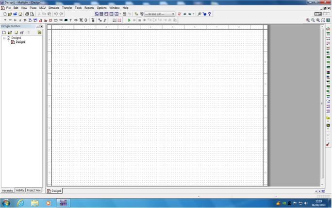
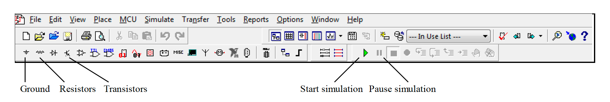
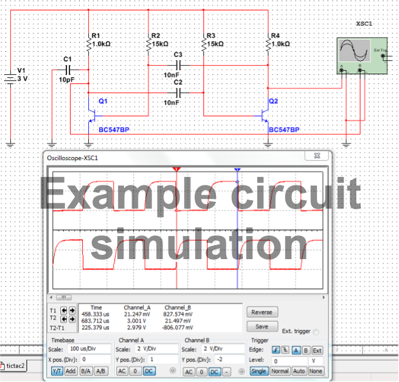

Simulation Exercise#
There are several circuit simulation packages available to students in the Department of Electronic and Electrical Engineering. In this exercise we shall be using Multisim 14.2, from National Instruments. We shall use it again in two other laboratories in your first year of study, EG-143 Digital Design and EG-152 Analogue Design.
Use of Multisim#
Starting from the Windows desktop, click on “Zenworks” followed by “Engineering” and select NI Multisim 14.2 from the list of available packages. The main screen should look like Fig. 125:
{kind=link}

Fig. 125 The National Instruments Multisim home screen.#
If there is a wide dialogue box at the bottom of the screen, click on “View” and untick the item “Spreadsheet view”. The dialogue box should disappear.
We shall now use Multisim to create a simulated circuit and oscilloscope, that is identical in function to the oscillator built on breadboard in section 4.
The toolbar of the Multisim programme looks like Fig. 126:
{kind=link}

Fig. 126 The toolbar of the Multisim programme#
The actual appearance may differ depending on the screen resolution and the available options.
Selection of Components#
Click on the “Ground” A dialogue box “Select a component” appears.
Select “Power Source” from the left-hand Click on “DC Power” in the right-hand column, followed by “OK”. The dialogue box disappears, and a battery symbol appears. Move the symbol to the desired location. When the symbol has been placed (left click), the dialogue box reappears.
Click on “Ground” on the right-hand Click on “OK”, and the dialogue box disappears. Place the ground symbol in the desired location. The dialogue box reappears.
Click “OK” and place another ground symbol on the Repeat until there are five in total.
Dismiss the “Select a Component” dialogue by clicking on “Close”.
The battery voltage must be changed to 3V. Place the cursor exactly in the middle of the battery and right-click. A dialogue box appears. Select “Properties” and change the value to 3V.
Click on the “Resistors” A dialogue box “Select a Component” appears.
Click on “Resistor” on the left-hand column.
Scroll the right-hand column until the value “1k” Click on “OK”.
Place four resistors using the same procedure as for the ground
Click on “Capacitor” in the left-hand column.
Scroll the right-hand column until the value “10nF” Click on “OK”.
Place three capacitors using the same procedure as for the ground symbols and resistors.
Dismiss the “Select a Component” dialogue by clicking on “Close”.
The resistors are all oriented in a horizontal position. We need to turn them through 90 degrees and change the value of two of them to 15k. Begin by placing the cursor exactly in the middle of a resistor. Right-click to reveal a dialogue box. Select “Rotate 90 deg clockwise”. Repeat this for all four resistors. To change the value of a resistor, right-click on the resistor, select “Properties”, and change the value to 15k. All four resistors should now be vertical, with two valued 1k and two valued 15k.
Use the same procedure to change the value of ONE capacitor to 10pF. Next, we shall select and place two transistors.
Click on the “Transistors” A dialogue box “Select a Component” appears.
Click on “BJT NPN” in the left-hand column.
Scroll the right-hand column until the value “BC547BP” Click on “OK”.
Place two transistors using the same procedure as for the ground symbols and
Dismiss the “Select a Component” dialogue by clicking on “Close”.
Both transistors are “facing left”. We want them to face each other, so one must be flipped in the horizontal direction. Begin by placing the cursor exactly in the middle of a transistor. Right-click to reveal a dialogue box. Select “Flip Horizontally”.
Wiring the circuit#
Components can be repositioned by placing the cursor exactly in the middle of the component and holding down the left mouse button as the component is moved; when the component is in the correct position, then release the left mouse button (“drag and drop”).
When the components are arranged to your satisfaction, wire them up according to Fig. 127 below. Place the cursor at the end of a component, and when the “blob” appears, drag a wire to the next component and release the mouse button. If you drag a connection to the middle of an existing wire and left click, a new “blob” appears. Wires can be re-positioned by placing the cursor on the wire and dragging it in the required direction.
Connecting the Oscilloscope#
We need some means of observing the operation of the circuit. Run the cursor down the list of icons on the right-hand side of the screen. Find the oscilloscope. Click to select, and the oscilloscope icon appears on the screen. Drag the oscilloscope icon to the desired position. This icon is just for connecting to the rest of the circuit; the “real thing” is revealed when the icon is double-clicked.
Note that the oscilloscope icon has pairs of connections to each of its “y” channel inputs A and B. Begin by connecting the “ground” side of each input to a ground symbol. Both grounds can go to the same ground symbol. Connect one of the “y” inputs to TP1 and the other to TP2. Now double-click the oscilloscope icon to reveal the instrument’s front panel. Use the up and down arrows in the Channel A, Channel B and Timebase “Scale” boxes to set the vertical sensitivity to 2V per division and the timebase to 0.05ms per division. The simulation circuit is now ready to run.
{kind=link}

Fig. 127 The completed circuit being simulated in Multisim with the oscilloscope trace visible.#
Running the simulation#
The circuit can now be turned on using the green triangle in the command line. A waveform should appear on the screen. Use “Y-pos” to move Channel B down the screen so that it is separate from Channel A. Click the button marked “pause/resume” to give a stationary display with 2 or 3 cycles visible. Here are some hints for running the simulation:
Click on “reverse” to give a white background instead of a black one. This saves ink if you print out the simulation and looks neater.
Sometimes, there is an error message when the simulation is started. Try changing the following setting: Simulate/Interactive, then select “Initial Condition - Set to Zero”. Select “Max time step” and alter the value to 1e-006. Click on OK.
When you are preparing a screen to be saved, click on the Trigger setting “Single” instead of “Auto”. Now every time you click the “Pause” button (alongside the green triangle), a full screen will appear on the oscilloscope display.
Making Measurements#
The practical oscilloscope has X and Y cursors so that readings of time and voltage can be made from the display. The simulated oscilloscope is slightly different. It has X cursors only; however, the oscilloscope reports time and voltage for each X cursor, so the same information is available. The only omission is a \(1/t\) or frequency readout - you must calculate it yourself!
Look at the top left of the simulated oscilloscope display. There are two coloured triangles which can be dragged across the display. Position one cursor at the start of a cycle and the other cursor at the start of the next cycle. The period of the waveform can be read from the “T2-T1” box.
Record the values measured for the period and calculate the frequencies (be careful to use sensible units) in your lab diary.
Screengrab the simulation display and copy it into your lab diary:
Select “Tools - Capture Screen Area”. A dotted box appears on the computer
Expand the dotted box and move it to enclose the part of the screen you want to save. Click on the icon found at the top left of the dotted box. The selected area has now been copied to the
Bring up WORD and paste the simulation image into your lab diary.
Stop the simulation by pressing the pause icon on the command line. Move Channel B’s oscilloscope input from TP1 to TP3, then run the simulation and copy the new screen image to your lab diary. Use the cursors to measure and record the amplitude, period and frequency of the waveforms.
Finally, change the property of the battery from 3V to 1.5V and repeat the above measurements. You will need to change the oscilloscope settings, Channel A Scale and Y-Pos, Channel B Scale and Y- Pos; otherwise, the waveforms will be too small in the vertical direction.